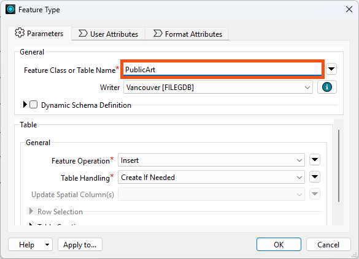
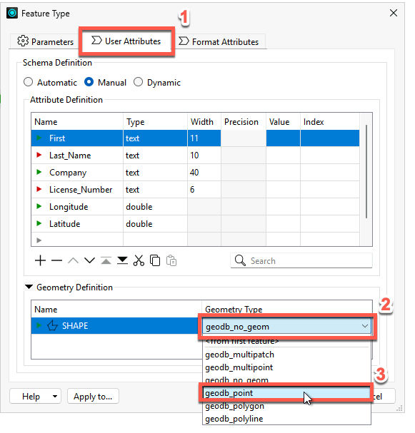
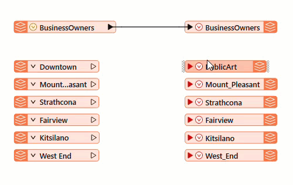
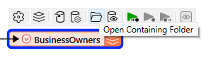

Learning Objectives
After completing this lesson, you’ll be able to:
- Set the schema for your output data.
- Combine data from different sources.
- Find your written data.
Instructions
In this lesson, you will:
- Scroll down to read the text below.
- Complete the exercise by following the steps.
- Complete the Quiz toward the bottom of the page.
- Optional: Let us know if you found this lesson relevant to your role by filling out the survey at the bottom of the page.
- Click 'Next' to mark the lesson complete.
Resources
- Starting workspace
- C:\FMEData\Workspaces\IntegrateDataWithTheFMEPlatform\bring-together-multiple-streams.fmw
- Complete workspace
- C:\FMEData\Workspaces\IntegrateDataWithTheFMEPlatform\bring-together-multiple-streams-complete.fmw
- BusinessOwners.xlsx
- C:\FMEData\Data\Planning\BusinessOwners.xlsx
- PublicArt.xlsx
- C:\FMEData\Data\Culture\PublicArt.xlsx
Combine Your Data Streams

When multiple streams connect to the same input port, the features accumulate. This operation is often called a union.
Sven continues working on his Excel-to-geodatabase workspace. He realizes that with a separate writer feature type for each public art feature type, he will end up with many layers in the geodatabase, one for each neighborhood’s public art features. This corresponds to the Excel file's structure, with one sheet per neighborhood. However, in the geodatabase, he’d prefer all public art stored in a single layer called PublicArt. He gets to work on editing his writer feature types to achieve this outcome.
1) Open Starting Workspace
- Start FME Workbench (2026.1 or later).
- Open the starting workspace (C:\FMEData\Workspaces\IntegrateDataWithTheFMEPlatform\bring-together-multiple-streams.fmw).
2) Edit Writer Feature Types
To create a single public art feature type, you could add a new one, but it's easy to edit an existing one and then delete the others.
- Double-click on the Downtown writer feature type to open the writer Feature Type dialog.
- Rename the Feature Class or Table Name to “PublicArt".

- Click on User Attributes, and set the Geometry Type

- Click OK to accept the changes in the Feature Type dialog.
3) Connect Feature Types
- Connect PublicArt to all of the neighborhood reader feature types by clicking on the red triangle going into PublicArt, holding down the CTRL key (⌘ or Shift on Mac), and clicking on each triangle coming out of the neighborhood feature types (Downtown, Mount Pleasant, Strathcona, Fairview, Kitsilano, and West End).
- By creating these feature connection lines, you are telling FME to route all features from these sources into a single destination. Features travel from left to right across the feature connection lines when the workspace runs.

- Delete the writer feature types that are not connected (Mount_Pleasant, Strathcona, Fairview, Kitsilano, and West_End).
- Click and drag a rectangle around them, then right-click one of them and select Delete.
4) Run and Locate Your Output Data
- Click Run in the toolbar.
- Click Run in the Translation Parameter Values dialog.
- This dialog keeps appearing because, by default, workspaces let the user choose the paths for input and output data. You can customize this behavior; we'll show you how later in the course.
- Select the BusinessOwners writer feature type.
- Click the Open Containing Folder icon.
- This opens the C:\FMEData\Output\Training folder, where FME wrote the data.

- You should see the Vancouver.gdb file geodatabase in that folder.
- This confirms that the geodatabase was created in the correct folder, and we can expect the BusinessOwners and PublicArt feature classes to be within it.
In the next lesson, we’ll inspect it to ensure the contents of Vancouver.gdb are correct by checking that there are two feature types (BusinessOwners and PublicArt), they have the correct schema (attribute names, types, and allowed geometries), and they contain the correct number of features.
Leave Us Feedback on This Lesson